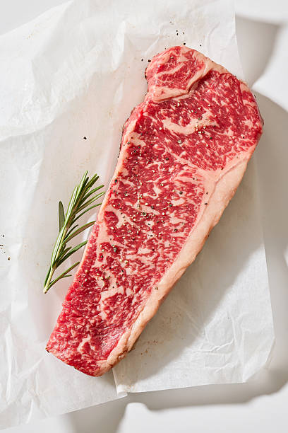

How to Order Utah Wagyu Beef
Simple 5-step process for your family
Pasture to plate, The Rocky Mountain Way
How to Order
Our Utah Wagyu beef ordering process is straightforward and personal. We'll work with you every step of the way to ensure you get exactly what you need from our family farm.
Contact Us
Give us a call or text at 402-217-5291 (primary), 801-301-3850 (secondary), or 435-239-5465, or email us at rockymtnwagyu@gmail.com to discuss your Utah Wagyu beef needs. We'll help you determine the right option for your family—whether that's a whole beef, half, or quarter.
We operate on a farming timeline, so don't worry about rushing. We're happy to take the time to answer all your questions and explain our process in detail, including pricing and butcher options for your premium beef order.

Select Your Beef
Choose from our available cattle or reserve a spot in our pre-sale program. Each animal is raised for a full 2.5 years on our Utah farm to ensure optimal marbling and flavor.
We sell whole, half, and quarter beef only. This ensures you get the best value and complete control over how your Wagyu beef is cut and packaged.

Choose Your Butcher Option
You have three options for processing your Utah Wagyu beef:

Specify Your Cuts
If you're using your own butcher or having us deliver to your butcher, you'll work directly with them to specify how you want your Wagyu beef cut and packaged.
If you're using our butcher service, we'll provide you with a cutting instructions form. Choose your preferred steak thickness, roast sizes, and ground beef package amounts. We're happy to provide recommendations based on your family's cooking preferences if this is your first time ordering premium beef.

Pickup Your Beef
Standard Option: Pick up your live animal or hanging carcass from our Utah farm and transport to your butcher.
Using Our Butcher: We'll contact you when your Wagyu beef is processed, packaged, and ready for pickup. We'll coordinate a convenient time that works with your schedule.
Make sure you have adequate freezer space ready—we recommend 16–20 cubic feet for a whole beef, 8–10 cubic feet for a half, and 4–5 cubic feet for a quarter.

Our Butcher Service Options
If you choose to use our butcher service (premium option) for your Utah Wagyu beef, you can select your packaging method. Both options preserve quality and freshness.

Vacuum Sealed
Our vacuum-sealed packaging removes all air from the package, providing maximum protection against freezer burn and extending shelf life up to 2–3 years in the freezer.
Benefits: Longest freezer life, prevents freezer burn, easy to see contents, space-efficient stacking
*Available only when using our butcher service

Butcher Paper
Traditional butcher paper wrapping provides excellent protection while being more eco-friendly. Beef stays fresh for 6–12 months in the freezer when properly wrapped.
Benefits: Traditional method, environmentally friendly, easy to label, classic presentation
*Available only when using our butcher service
Pricing Information
Butcher service pricing varies based on the size of your Utah Wagyu beef order and packaging preferences. We'll provide a detailed cost breakdown when you place your order.
Contact us to discuss: Current processing fees, delivery charges (if applicable), and estimated total costs for your specific Utah Wagyu beef order.
402-217-5291 | 801-301-3850 | 435-239-5465
What to Expect
Here's a general timeline for the Utah Wagyu beef ordering process from start to finish.
Initial Contact
Reach out to us and we'll discuss your Utah Wagyu beef needs, answer questions, and help you select the right option—whole, half, or quarter beef. We'll also explain butcher options and pricing. Call or text 402-217-5291 | 801-301-3850 | 435-239-5465.
Selection & Reservation
Choose from currently available beef or reserve a spot in our pre-sale program. We'll provide all the details about timing and expectations for your premium beef order.
Butcher Coordination
Depending on your choice: coordinate with your own butcher, or we'll handle everything with our butcher service. If using our butcher, you'll receive cutting instructions to specify your preferences.
Processing (If Using Our Butcher: 2–4 weeks)
Your Wagyu beef is professionally butchered and aged to perfection, then cut and packaged according to your specifications.
Pickup
Standard option: Pick up from our Utah farm and transport to your butcher. Premium option: We'll notify you when your processed Wagyu beef is ready for pickup. Bring your coolers and get ready to stock your freezer with premium beef!
Ready to Order Your Utah Wagyu Beef?
Contact our family farm today to get started. We're here to answer your questions and help you through every step of the ordering process for your premium beef.